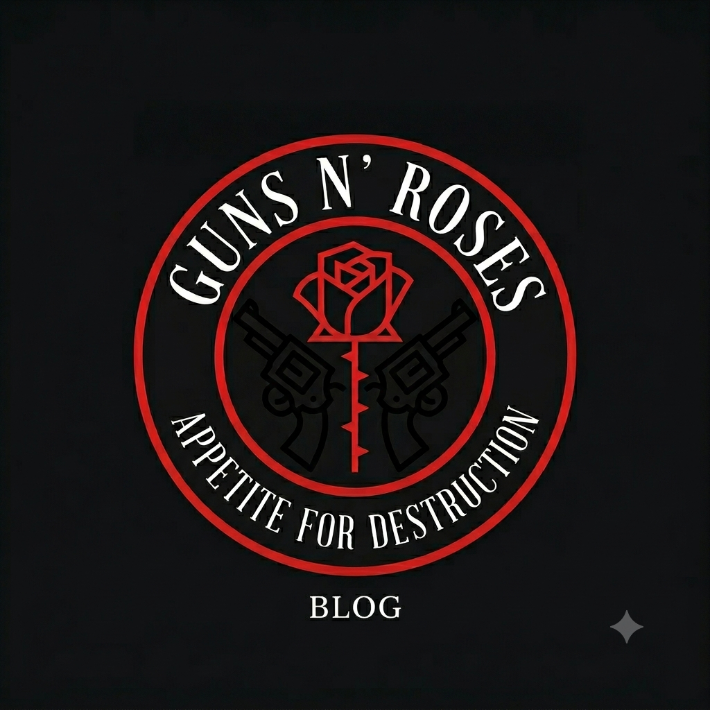

Meu primeiro post
Por: Rafael Vivi
Boas-vindas ao meu novo Blog! Aqui vou compartilhar curiosidades sobre a história da banda Guns N' Roses
Vou compartilhar curiosidades sobre a história da banda Guns N' Roses

Por: Rafael Vivi
Boas-vindas ao meu novo Blog! Aqui vou compartilhar curiosidades sobre a história da banda Guns N' Roses